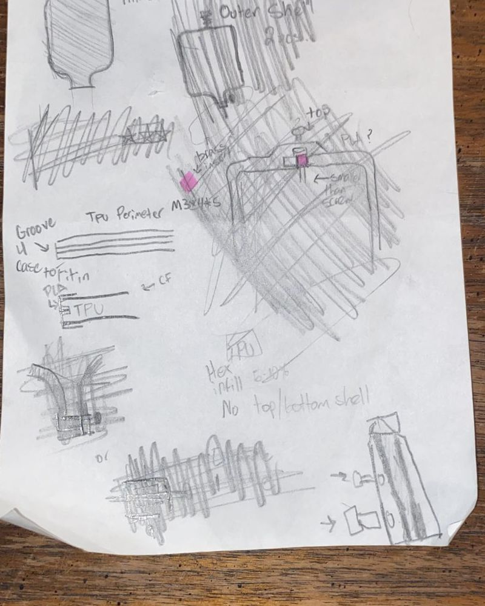
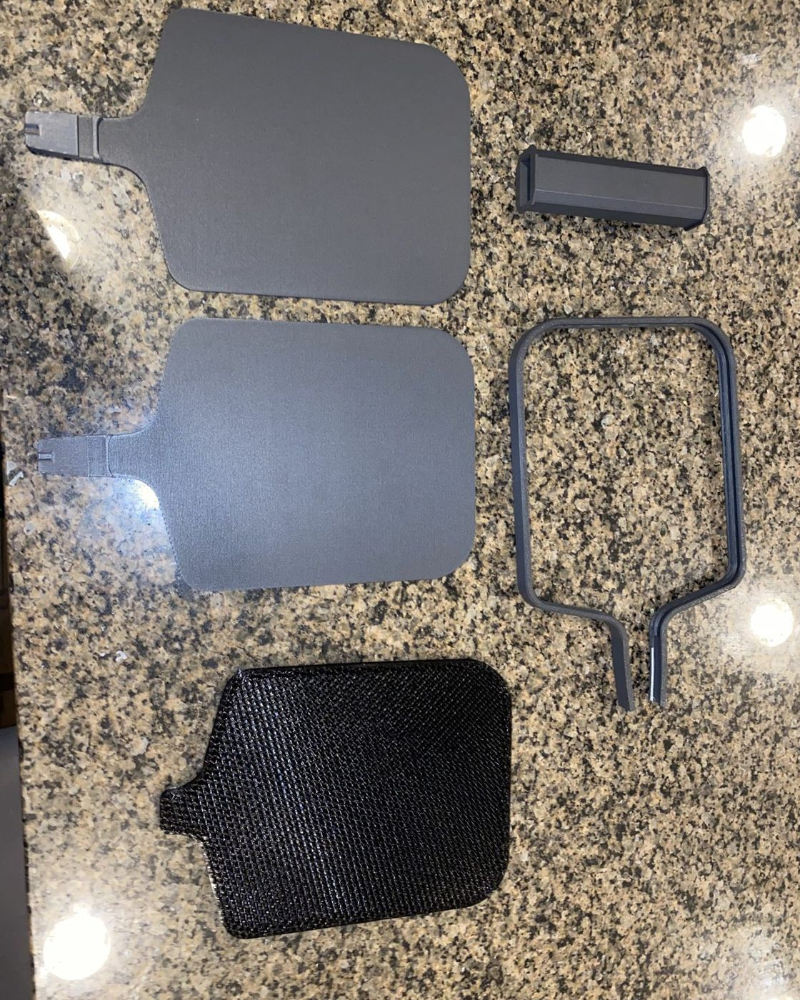
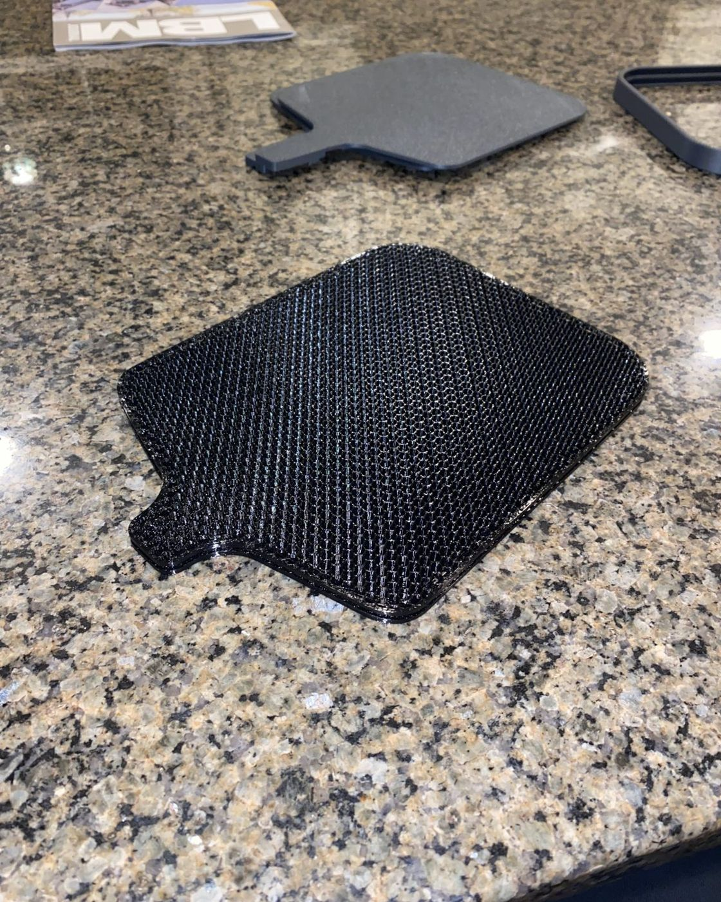
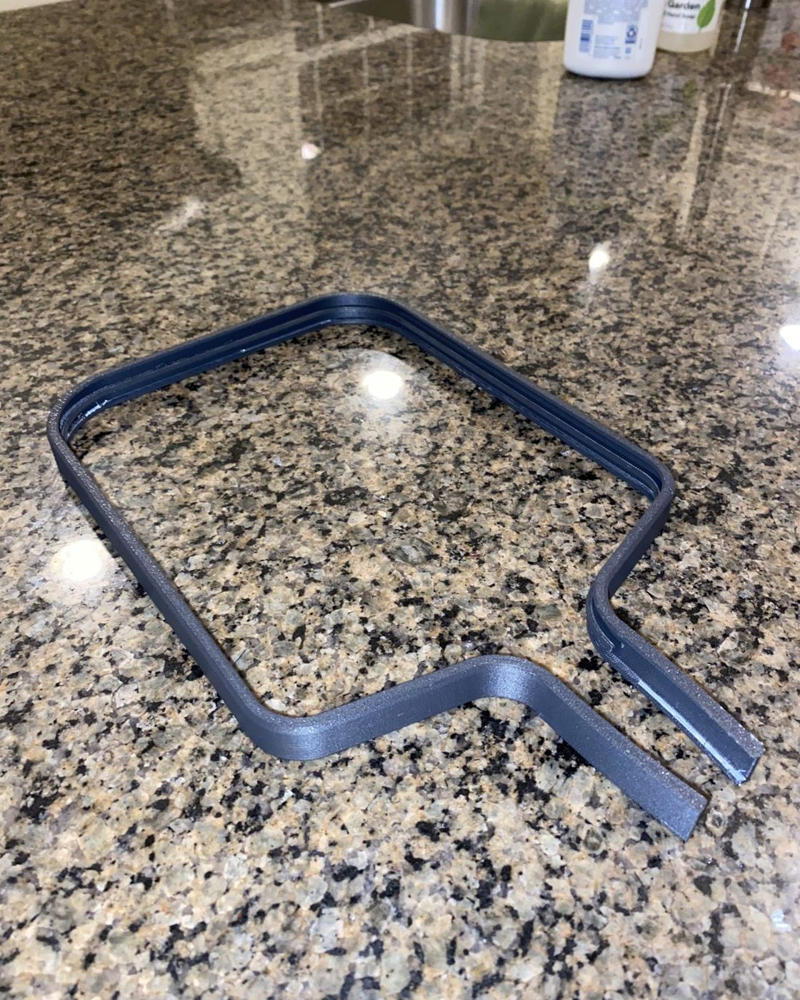
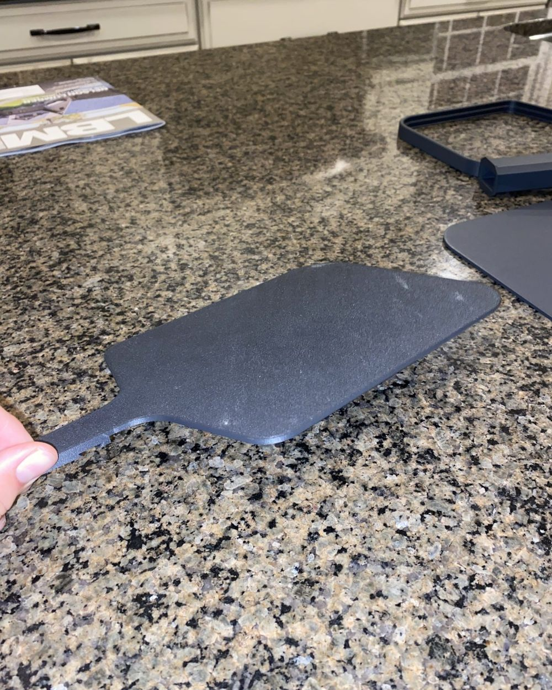
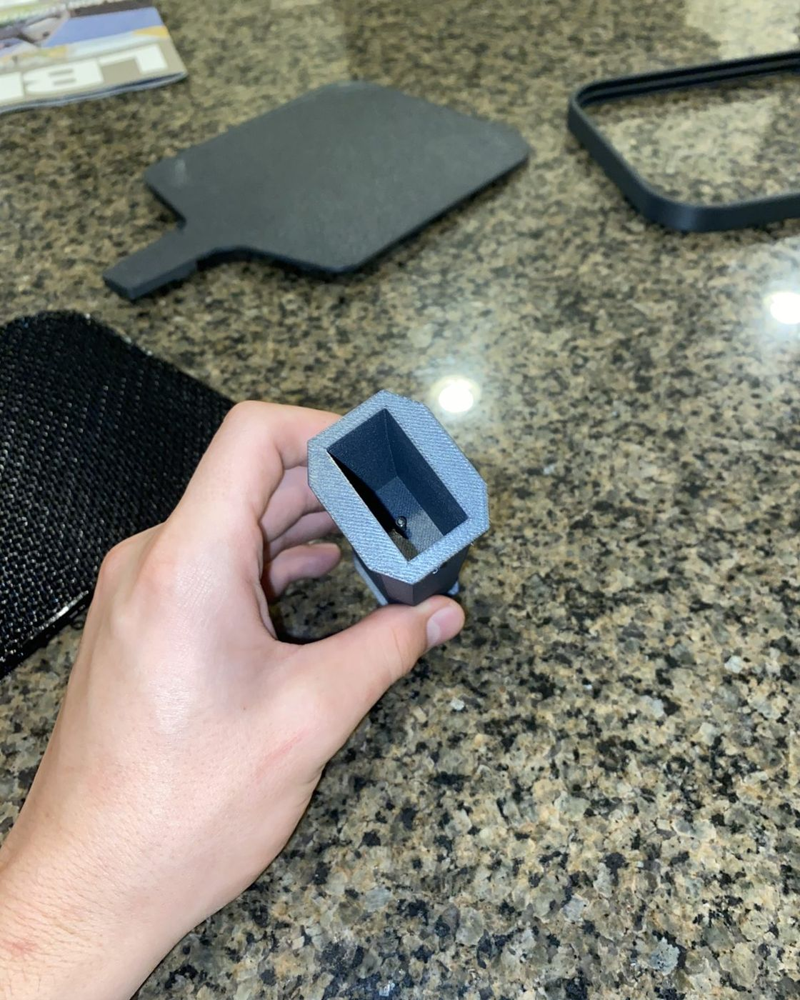
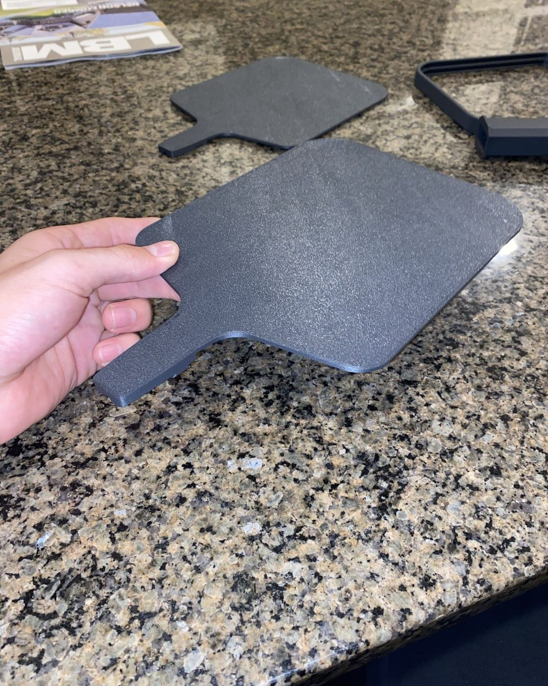
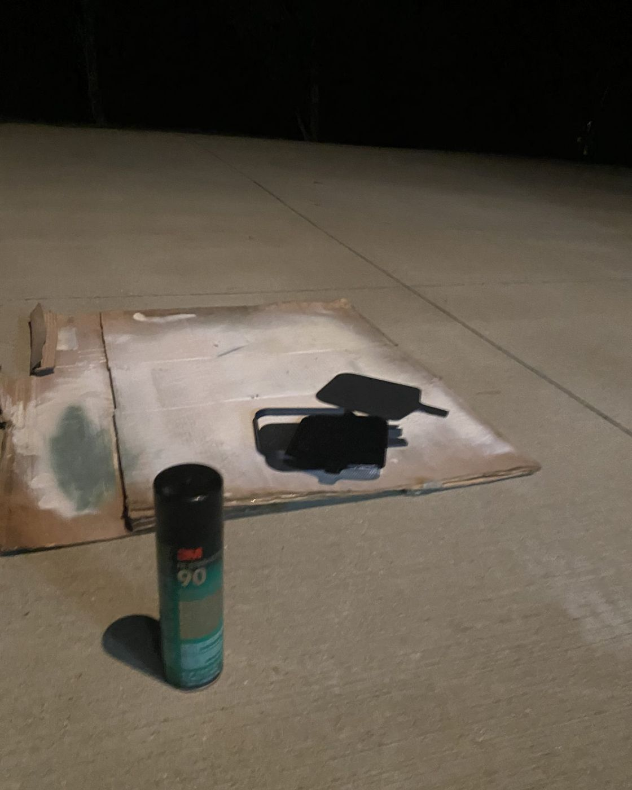
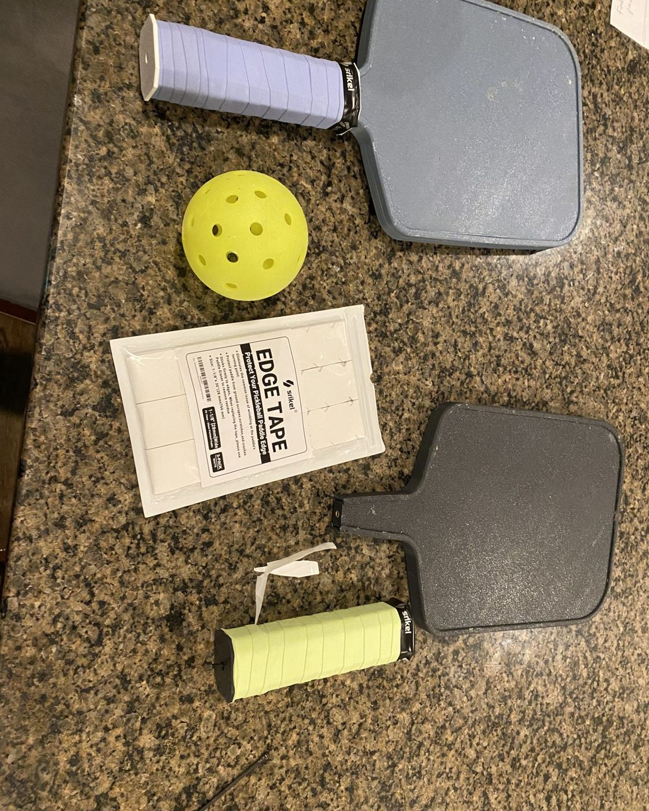
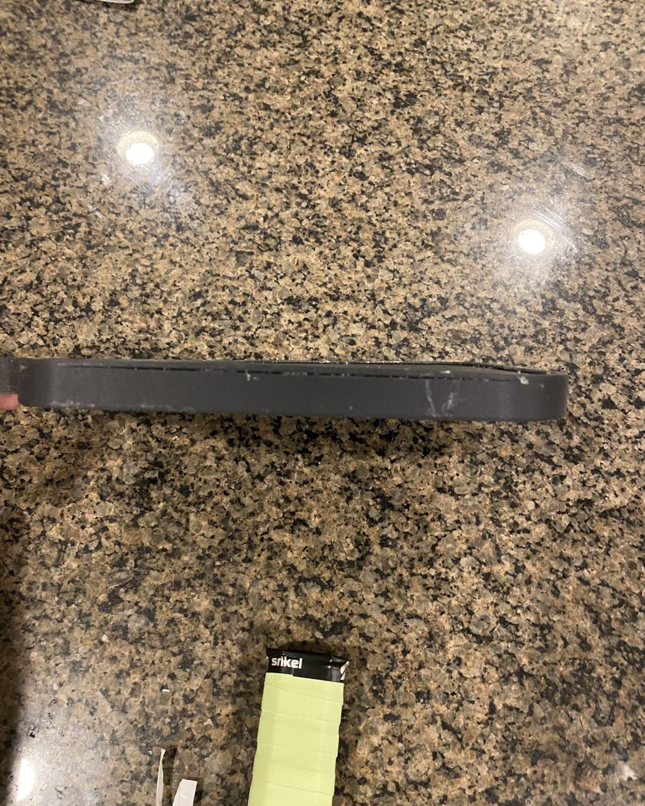

Real paddles are mostly plastic, so I wanted to know if I could print one that actually plays. After a few months of iterating, I have two that play in real games, and now I'm working on version 2.
Status
In progress: two v1 paddles done, testing v2
Size
14.2 × 6.9 in, 0.64 in thick (edge guard to edge guard)
Before modeling anything, I researched how commercial paddles are built, how they work, and how they're manufactured. High-end paddles use a polypropylene honeycomb core to absorb impact, with stiff face sheets on either side.
I also looked for anyone who had already 3D printed one. I found one project that documented its process, and I borrowed a key idea from it: a flexible TPU middle sandwiched between two harder plates. They used ABS for the plates; I used PETG because it's what I had.
Why TPU instead of polypropylene? Polypropylene honeycomb is what industry uses, but it's hard to print well. TPU is flexible, prints reliably, and does the same job: absorbing impact in the core.

Early sketches: the face shape, the TPU perimeter groove, and the insert pocket.
2Design
How it goes together
The paddle is a sandwich: a TPU honeycomb core with a PETG plate glued to each side. Three features lock the layers together so they act like one part.
Cross-section through the paddle face, not to scale.
TPU honeycomb core
The flexible middle layer, modeled after the impact-absorbing cores in high-end paddles. PETG plates are glued to both faces.
Keyed rim guard
A circular channel wraps around the edge of the TPU core. The rim guard has a matching circular key that presses into it and locks the plates and core together.
Dovetail handle
At the handle, the two plates join with a dovetail joint so they can't slide apart.
Heat-set insert and screw
Below the dovetail, a hexagonal pocket holds an M3 brass heat-set insert. Setting it fuses the plates together and gives a screw in the bottom of the handle something to thread into, which holds the whole assembly together.

Every part, before assembly.

TPU honeycomb core

Rim guard

PETG face plate

Handle
3What broke
Problems and fixes
Both of these taught me more than the parts that worked on the first try.
The paddle was too floppy to play with
Problem
The face flexed too easily and the paddle was hard to control.
Why
Without adhesive, the plates and core slid against each other instead of acting as one stiff panel.
Fix
Bonded the plates to the core. Once the layers couldn't slide, the paddle stiffened up.
The PETG-CF paddle split apart mid-game
Problem
On a forehand, the top half of the PETG-CF paddle came off.
Why
The brass insert hadn't seated properly. PETG-CF handles heat better than regular PETG, so the plastic around the insert never got hot enough to melt and bond.
Fix
Packed small pieces of regular PETG into the hex pocket. They melt more easily and gave the insert something to grip. It has held up and played well since.

A PETG face plate before bonding.

The first fix: bonding the plates to the core.
4Results
How it plays
About $12 per paddle
Material cost at my final infill, a fraction of the price of a comparable retail paddle.
Softer feel
It plays softer than a typical paddle, which gives more control and spin.
Custom fit
I made the handle longer than standard because I prefer it, and kept the face slightly smaller so it fits on the build plate.
A game outside: PETG paddle on the left, PETG-CF on the right.Slow motion: the paddle hitting the ball.

Both paddles, ready to play.

Edge-on: plates, core, and rim guard, 0.64 in across the edge guard.
5Against a real paddle
Mine next to an Engage Pursuit MX 6.0
Drag the real paddle onto mine. Both photos are scaled to their real lengths, so you can see how much longer a factory paddle is. My photo was taken at a slight angle, so use the table below for exact widths.
Mine: 14.2 × 6.9 in
Engage: 16.5 × 7.5 in
Drag the Engage paddle over mine
Loading the reference photo
Not at true scale right now
Mine (PETG)Engage Pursuit MX 6.0Ruler marks every 2 in
Engage Pursuit MX 6.0
Mine
Length
16.5 in
14.2 in (2.3 in shorter)
Width
7.5 in
6.9 in (0.6 in narrower)
Length plus width
24.0 in, the most the rules allow
21.1 in, so there's room to grow the face
Thickness
0.6 in core
0.64 in, edge guard to edge guard
Handle
5.75 in
Longer than standard for my grip
Core
Polymer honeycomb
TPU honeycomb
Face
Textured graphite
PETG plates (PETG-CF on my second paddle)
How it's built
Factory made
Printed on my X1C, then glued and pinned with a heat-set insert